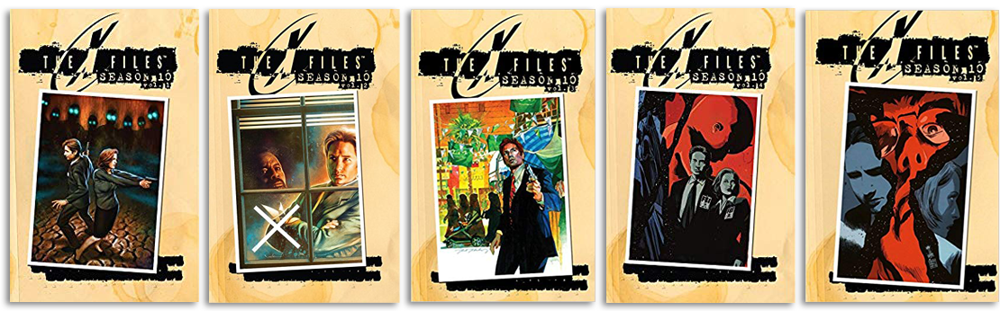
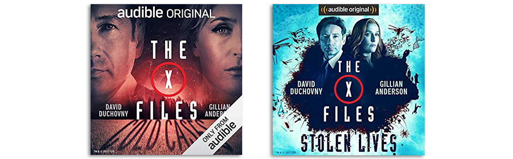

An Introduction
So, The X-Files is over, but you need more Mulder and Scully in your life? You may be aware that there have been some X-Files comic books over the years, but what are they about, which series is which, and where can you get them? In online discussions over the past few years, there’s been a lot of confusion about what these comics are about and, for those who want to check it out for themselves, exactly where to begin. There are multiple series, each available as individual issues, many as collected volumes, and some with multiple editions of collected volumes, and it can be a bit confusing and overwhelming to know where to start. So, let’s go ahead and break it down so everyone can enjoy some new X-Files adventures!
Three Eras of Comics
There are three distinct periods of X-Files comics throughout the history of the show, each put out by different publishers. These periods included various ongoing series, shorter miniseries, and the occasional one-shots.
Topps Comics (1995 – 1998)
The Topps Comics series ran alongside the original run of the show, between seasons 2 and 5. It included an ongoing original 41-issue series written by Stefan Petrucha, John Rozum, Kevin J. Anderson, and Dwight Jon Zimmerman, as well as a series of comics based on episodes from the show’s first season adapted by Roy Thomas. Kevin J. Anderson’s novel Ground Zero was also adapted into a 4-part comic miniseries during this period.
WildStorm (2008 – 2009)
To coincide with the the release of the second film, I Want to Believe, DC Comics imprint WildStorm released a one-shot book followed by a short 6-part series, most notable for its inclusion of Frank Spotnitz as one of the writers, along with Marv Wolfman and Doug Moench.
As a somewhat separate entity, WildStorm also teamed up with IDW in 2010 to create a 6-part crossover series between The X-Files and the comic series 30 Days of Night, written by 30 Days of Night creator Steve Niles along with Adam Jones of Tool fame.
IDW (2013 – 2018)
The most recent era in X-Files comics started in 2013 in honor of the show’s 20th anniversary and ran throughout the show’s television revival period. It included the ongoing series The X-Files: Season 10 and Season 11, which were intended as a semi-canon continuation of the series well before the decision was made to revive the TV series for another two seasons, as well as a post-revival series that was more in line with the creative decisions made in bringing the show back to television in 2016, all written by Joe Harris. This era also included a number of one-shots and miniseries by various authors.
The X-Files: Season 10
It’s these more recent series that I’ll primarily be focusing on in these blogs, as these are the books I had been following in real time during their initial release. First and foremost is the original and longest-running IDW offering, The X-Files: Season 10.
At this point, The X-Files: Season 10 and its follow-up, The X-Files: Season 11, are sure to draw some confusion, as they share little in common with the televised versions of Season 10 and Season 11. However, the comic version of Season 10 came about before the televised revival was even a thought, and was actually following in the footsteps of other television-to-comic continuations, such as Buffy the Vampire Slayer.
The series was written by Joe Harris, and the primary interior artists for the mythology issues were Michael Walsh (early issues) and Matthew Dow Smith, with colors by Jordie Bellaire. Various other artists contributed to the stand-alone/MOTW stories. Chris Carter acted as executive producer on the series, setting some story guidelines during the planning stages and approving scripts.
The Season 10 comics began as a “semi-canon” continuation of the series after I Want to Believe, as in, it was considered canon (or at least “comic book canon,” as Chris Carter once put it) if the series wasn’t going to continue on in another format, however, Carter reserved the right to deviate from the comic continuity if the series would continue in movie form, or, as it turned out, television form, which is exactly what happened. As a result, the Season 10 comic now functions as an AU (alternate universe) continuation of the series post-IWTB, though interestingly enough, this AU status is somewhat acknowledged at the end of the series in Season 11.
Season 10: Comics vs. Television
(Note: Skip this section if you want to remain totally spoiler-free.)
So, how does the comic book version of Season 10 compare to the television version? The comic begins around 2013, and as in the 2016 television revival, the scheduled 2012 invasion does not appear to have come to pass. And like in the television version, Mulder and Scully are spurred back into action and rejoin the FBI after an encounter with Skinner warns them of a potential looming threat and concerns for William’s safety. The similarities pretty much end there, however.
The Season 10 comic perhaps has a bigger focus on nostalgia. Joe Harris seems to have a love of the classic X-Files mythology, so things like the black oil and shape-shifting aliens are back at the forefront. As with the show, the comic is split between mythology and monster of the week and features a couple of stories that serve as sequels to classic MOTW episodes in addition to completely new monsters. Harris also finds ways to play with long-dead characters in his stories, either through flashback or other story conventions.
Sometimes the character revivals may seem a bit contrived, but fans of those characters will probably accept it and move on, just for the joy of seeing some of their favorites again. For instance, the Lone Gunmen are still alive in the comics, having apparently faked their deaths and are working in secret underground (literally). It’s one of the more “comic-booky” things in the series, but worth overlooking just to have the Gunmen back in their traditional support role for Mulder and Scully. Other characters appear to be back under very different circumstances, but honestly, as strange as some of them may be, the explanation for CSM’s appearance in the comic can’t really be any more ridiculous than recovering from having his flesh melted off by a missile to the face like he did in the show, right?
Some other differences include Skinner having been promoted to Deputy Director in the comics, while retaining his Assistant Director title in the show. William is mentioned in the comics but is never seen, nor do we learn his ultimate fate. Doggett and Reyes are still with the FBI in the comics, and while they don’t play a huge role, we at least have an idea of what they’re up to. And perhaps most notably for the shippers in the room who may have been put off by Mulder and Scully’s split in the revival, that never happened in the comics, and we start out with the two living together in a suburban neighborhood under new identities. Their relationship isn’t too overt for most of the comic’s run (with perhaps one notable exception), but it kind of lives comfortably in the background.
Now, where to begin?
Okay, this sounds interesting enough, so where do you begin? IDW had multiple ongoing X-Files series, issues had multiple cover variants, and Season 10 ended back in 2015, so tracking down physical copies of individual issues and keeping them all straight would be a cumbersome task for all but the most dedicated collector. Fortunately, though, IDW has given us a few different ways to catch up on this series.
Individual Issues
The individual Season 10 comics are no longer actively in print, but as of 2018, many are still available at online comic shops, the Amazon marketplace, and of course, eBay. This probably isn’t the ideal way for newcomers to catch up, but it’s useful if someone’s trying to fill in their existing collection or track down a particular piece of cover art to display. Most issues had several cover variants including the standard cover artwork, photographs from the series, and rarer alternate cover art used as retail intensives or event exclusives (though often alternate cover art is included in the collected versions, if you’re not worried about using it as a display piece).
For certain one-shot comics, however, individual issues may be the only way to go if they were never included in any collected volumes. As far as Season 10 is concerned, I’d recommend picking up the The X-Files X-Mas Special #1 (also available digitally) from 2014, which I don’t believe is included in the Season 10 collections, however, the first of the two stories included in the special takes place within the Season 10 universe (chronologically at some point between the stories “Monica & John” and “Elders”). This particular X-Mas Special can stand on its own and isn’t essential to understanding the ongoing Season 10 plot, but it’s one of the sweeter and funnier stories in the series and is totally worth reading for drunk Skinner alone.
Hardcover Collections

Season 10 was comprised of 25 issues released monthly between 2013 and 2015. Beginning in 2014, however, IDW began publishing hardcover collections, each containing five issues of the series for a total of five volumes. This worked out well, as the main mythology story arcs were each five issues long and were then separated by five issues of more stand-alone/MOTW stories (note that some single-issue stories here do also relate to the mythology). This meant that Volumes 1, 3, and 5 each contained a single mytharc story, and Volumes 2 and 4 were comprised of three or four separate stories that only spanned one to two issues each.
As of 2018, these volumes are still available to buy new, however, it’s unlikely that they will continue to stay in print, as IDW has recently re-released these comics in a more economical paperback collection. Amazon links are available below.
Hardcover Volume 1 – “Believers” (Issues 1-5)
Hardcover Volume 2 – “Hosts” (Issues 6-7), “Being for the Benefit of Mr. X” (Issue 8), “Chitter” (Issue 9), “More Musings of a Cigarette Smoking Man” (Issue 10)
Hardcover Volume 3 – “Pilgrims” (Issues 11-15)
Hardcover Volume 4 – “Immaculate” (Issues 16-17), “Monica & John” (Issue 18), “G-23” (Issues 19-20)
Hardcover Volume 5 – “Elders” (Issues 1-25)
Paperback Collections
In 2016, Season 10 was re-released in a more economical paperback form with The X-Files: Complete Season 10 Volume 1 and Volume 2. The newer release includes all 25 issues from Season 10 along with the 2014 and 2015 Annual specials as a bonus (one of the annuals includes a story by Frank Spotnitz, though it may feature some very questionable artwork).
As far as physical copies go, this 2-volume collection is probably going to give you the most bang for your buck.
Paperback Volume 1 – “Believers” (Issues 1-5), “Hosts” (Issues 6-7), “Being for the Benefit of Mr. X” (Issue 8), “Chitter” (Issue 9), “More Musings of a Cigarette Smoking Man” (Issue 10), “Pilgrims” (Issues 11-15)
Paperback Volume 2 – “Immaculate” (Issues 16-17), “Monica & John” (Issue 18), “G-23” (Issues 19-20), “Elders” (Issues 1-25), 2014 Annual, 2015 Annual
Digital Comics
And for those who don’t want to be burdened with a lot of paper or just prefer the convenience of reading on their screen, digital versions are also available for both individual issues as well as the collected volumes. The Amazon links above for the hardcover collections also have the Kindle version as an option, and most of the X-Files comics are also available digitally on comiXology, though I’d still recommend doing your research before buying to avoid potential repeat purchases.
The X-Files Cold Cases and Stolen Lives

So, for anyone who’s listened to the two X-Files audio dramas released on Audible in 2017, this all might sound pretty familiar. That’s because the audio books were an adaptation of the Season 10 comics, with Dirk Maggs adapting Joe Harris’ original comic scripts to the audio format. The end result resembles more of a radio play than a traditional audio book, with actors voicing their individual roles and very little in the way of descriptive narration.
All 25 issues of the Season 10 comics were adapted into two volumes of the audio dramas, with the first volume being named Cold Cases, and the second Stolen Lives. The overall content is generally the same as it was in the comics, just with some slight shifting around (the story “Chitter” appears later in the audio books than in the comics) and the obvious narrative changes needed to adapt a purely visual medium into a purely aural one.
With that said, reading the comics and listening to the audio books are both pretty unique experiences despite sharing the same source material. You get a very different sense of scope and timing when viewing images on a page versus listening to voices and sound effects. There are definitely times when the audio format can be slightly awkward, such as when characters end up describing what they’re doing instead of being able to use art to show a character’s actions visually. On the other hand, the audio books generally do an excellent job of using ambient sound and sound effects to immerse the listener in a scene.
The biggest draw to the audio versions, however, is that it’s another chance for us to hear some of our favorite actors reprise their roles. Gillian Anderson, David Duchovny, Mitch Pileggi, William B. Davis, Tom Braidwood, Bruce Harwood, and Dean Haglund are all back to voice their respective characters. The voice direction is perhaps a little hit or miss at times, and it’s jarring to have characters like Doggett, Reyes, and especially Krycek voiced by different actors, but it’s still a lot of fun to hear Scully, Mulder, Skinner, CSM, and the Lone Gunmen bringing their characters to life.
So, if you’ve only listened to the audio books or if you’ve only read the comics, I highly recommend giving the other format a try, as well, since they each engage you in a completely different way.
As the audio dramas were an Audible exclusive, they are currently only available as a digital download from Audible/Amazon. You can find them here:
The X-Files: Cold Cases
Episode 1 : “Believers” (Issues 1-5)
Episode 2: “Hosts” (Issues 6-7)
Episode 3: “Being for the Benefit of Mr. X” (Issue 8)
Episode 4: “More Musings of A Cigarette Smoking Man” (Issue 10)
Episode 5: “Pilgrims” (Issues 11-15)
Episode 1: “Immaculate” (Issues 16-17)
Episode 2: “Chitter” (Issue 9)
Episode 3: “Monica and John” (Issue 18)
Episode 4: “G-23” (Issues 19-20)
Episode 5: “Elders” (Issues 21-25)
To Be Continued…
So, whichever format you decide to experience The X-Files: Season 10 in, one thing remains the same: It ends on a goddamn cliffhanger. Fortunately, Season 10 isn’t the end…
(Part 2: The X-Files: Season 11… coming… eventually?)
Liked this post? Follow this blog to get more.